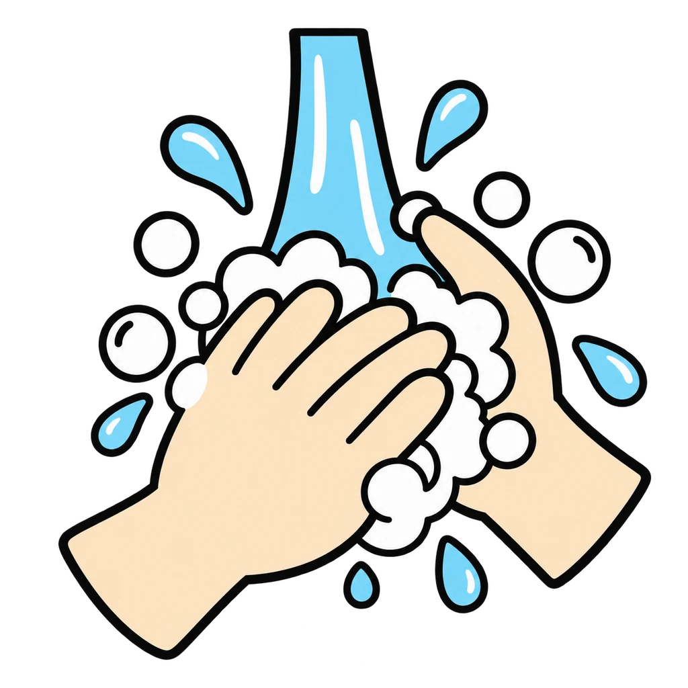
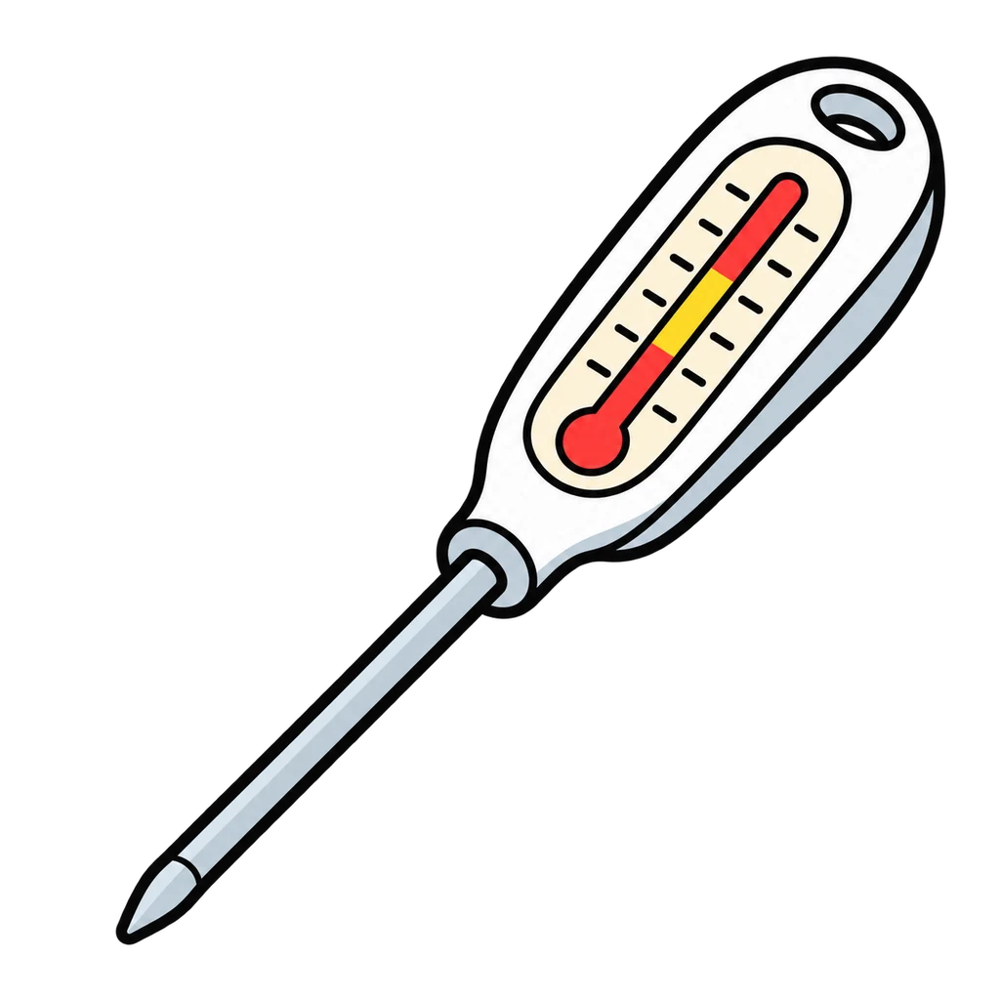
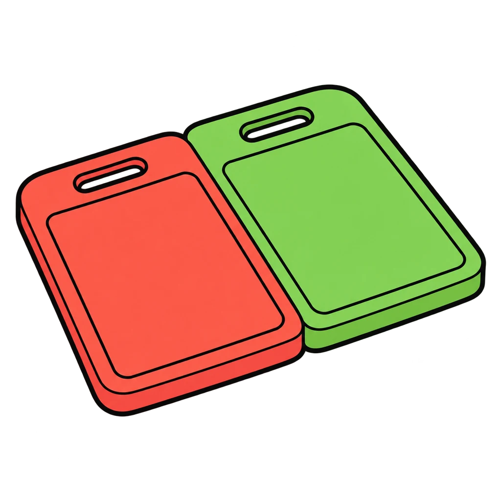

Reviews Lesson 1.2, Lesson 1.3. Reviews Lesson 1.2 (the Safe or Not Safe station sort) and Lesson 1.3 (the What Would You Do relay). Use it as the Day 2 warm up in Lesson 1.4 before the Kitchen Safety Exam, or as the ten-minute review before a retake. Round 1 draws 12 of the 16 cards, so a second play shows different cards; the four cards teams argue most (7, 11, 16, and 5) are always in the draw. The bins are Safe and Not Safe; a miss shows the rule and the fix from the key. Round 2 keeps the same six verbs as the cards (turn off, cover, cool, press, raise, tell) and never offers water, ice, butter, or carrying the pan as the right answer. Grade 6 setting: drop cards 7, 11, 14, and 16 from round 1 and stop round 2 at seven questions.

Safe or Not Safe
A kitchen scene card appears. Tap Safe or Not Safe, and the feedback names the rule: Hands, Zone, or Cross. Then an emergency appears, and you tap the right first move from three.
How to play



Done
The ones to study:
Worth knowing by heart:
- The three rules: Hands, Zone, Cross
- The danger zone is 40 F to 140 F; two hours in the zone and the food is thrown out
- A grease fire gets a lid, not water
- A burn gets cool running water for 10 minutes, no ice
- A cut gets pressure and a raised hand; blood on food means the food goes in the trash
- The Safety Data Sheets say what is in a cleaner and what to do if it gets on you